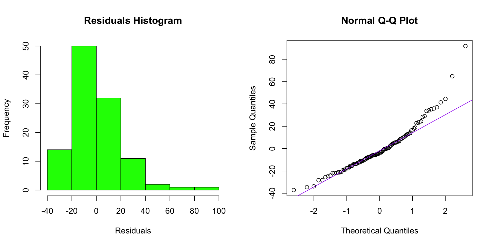
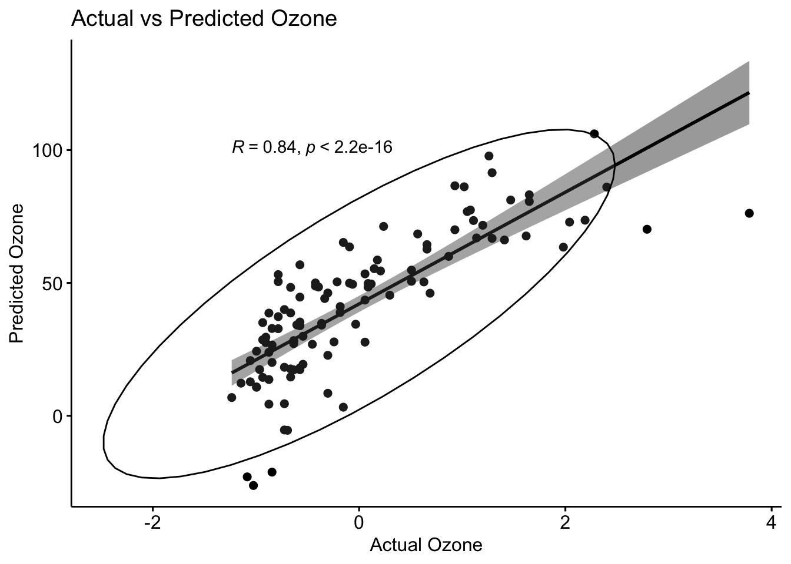

knitr::opts_chunk$set(echo = TRUE)Daily_Ex_11/12
Ecosystem Science and Sustainability 330
library(tidyverse)── Attaching core tidyverse packages ──────────────────────── tidyverse 2.0.0 ──
✔ dplyr 1.1.4 ✔ readr 2.1.5
✔ forcats 1.0.0 ✔ stringr 1.5.1
✔ ggplot2 3.5.1 ✔ tibble 3.2.1
✔ lubridate 1.9.4 ✔ tidyr 1.3.1
✔ purrr 1.0.2
── Conflicts ────────────────────────────────────────── tidyverse_conflicts() ──
✖ dplyr::filter() masks stats::filter()
✖ dplyr::lag() masks stats::lag()
ℹ Use the conflicted package (<http://conflicted.r-lib.org/>) to force all conflicts to become errorslibrary(tidymodels)── Attaching packages ────────────────────────────────────── tidymodels 1.2.0 ──
✔ broom 1.0.7 ✔ rsample 1.2.1
✔ dials 1.3.0 ✔ tune 1.2.1
✔ infer 1.0.7 ✔ workflows 1.1.4
✔ modeldata 1.4.0 ✔ workflowsets 1.1.0
✔ parsnip 1.2.1 ✔ yardstick 1.3.2
✔ recipes 1.1.0
── Conflicts ───────────────────────────────────────── tidymodels_conflicts() ──
✖ scales::discard() masks purrr::discard()
✖ dplyr::filter() masks stats::filter()
✖ recipes::fixed() masks stringr::fixed()
✖ dplyr::lag() masks stats::lag()
✖ yardstick::spec() masks readr::spec()
✖ recipes::step() masks stats::step()
• Search for functions across packages at https://www.tidymodels.org/find/library(visdat)
library(broom)
library(dplyr)
library(recipes)
library(lme4)Loading required package: Matrix
Attaching package: 'Matrix'
The following objects are masked from 'package:tidyr':
expand, pack, unpacklibrary(ggplot2)
library(ggpubr)#Part 1: Normality Testing #Q1: What does this dataset represent? This dataset represents the New York Air Quality Measurements of daily air quality from May to September in 1973. From May 1, 1973, to September 30, 1973, daily air quality readings were taken for ozone, solar radiation, wind speed, and temperature. Ozone levels in parts per billion were measured between 1300 and 1500 hours at Roosevelt Island. Solar radiation, in the frequency band of 4000–7700 Angstroms, was recorded from 0800 to 1200 hours at Central Park. Wind speed, in miles per hour, was averaged at 0700 and 1000 hours at LaGuardia Airport, while the maximum daily temperature, in degrees Fahrenheit, was also recorded at LaGuardia Airport.
?airquality
str(airquality)'data.frame': 153 obs. of 6 variables:
$ Ozone : int 41 36 12 18 NA 28 23 19 8 NA ...
$ Solar.R: int 190 118 149 313 NA NA 299 99 19 194 ...
$ Wind : num 7.4 8 12.6 11.5 14.3 14.9 8.6 13.8 20.1 8.6 ...
$ Temp : int 67 72 74 62 56 66 65 59 61 69 ...
$ Month : int 5 5 5 5 5 5 5 5 5 5 ...
$ Day : int 1 2 3 4 5 6 7 8 9 10 ...summary(airquality) Ozone Solar.R Wind Temp
Min. : 1.00 Min. : 7.0 Min. : 1.700 Min. :56.00
1st Qu.: 18.00 1st Qu.:115.8 1st Qu.: 7.400 1st Qu.:72.00
Median : 31.50 Median :205.0 Median : 9.700 Median :79.00
Mean : 42.13 Mean :185.9 Mean : 9.958 Mean :77.88
3rd Qu.: 63.25 3rd Qu.:258.8 3rd Qu.:11.500 3rd Qu.:85.00
Max. :168.00 Max. :334.0 Max. :20.700 Max. :97.00
NA's :37 NA's :7
Month Day
Min. :5.000 Min. : 1.0
1st Qu.:6.000 1st Qu.: 8.0
Median :7.000 Median :16.0
Mean :6.993 Mean :15.8
3rd Qu.:8.000 3rd Qu.:23.0
Max. :9.000 Max. :31.0
#Q2: Shapiro-Wilk normality test
airquality <- na.omit(airquality)
shapiro.test(airquality$Ozone)
Shapiro-Wilk normality test
data: airquality$Ozone
W = 0.87355, p-value = 2.846e-08shapiro.test(airquality$Temp)
Shapiro-Wilk normality test
data: airquality$Temp
W = 0.98007, p-value = 0.09569shapiro.test(airquality$Solar.R)
Shapiro-Wilk normality test
data: airquality$Solar.R
W = 0.93285, p-value = 2.957e-05shapiro.test(airquality$Wind)
Shapiro-Wilk normality test
data: airquality$Wind
W = 0.98076, p-value = 0.1099#Q3: What is the purpose of the Shapiro-Wilk test? The purpose of the Shapiro-Wilk test is to determine whether a dataset is normally distributed, statistically. The Shapiro-Wilk test provides a p-value to assess normality: a p-value >0.05 suggests the data is not normally distributed, while a p-value >0.05 indicates normal distribution.
#Q4: What are the null and alternative hypotheses for this test? For the Shapiro-Wilk test, the null hypothesis would be a p-value >.05 and follow a normal distribution and the alternative hypothesis would be a p-value <.05 and indicate the data does not follow a normal distribution.
#Q5: Interpret the p-values. Are these variables normally distributed? We interpret p-values to indicate statistical significance. If a p-value is <.05, we reject the null hypothesis. If a p-value is >.05 then we would fail to reject the null hypothesis. For the six variables, Ozone p-value = 2.846e-08, Temperature p-value = 0.09569, Solar Radiation p-value = 2.957e-05, and Wind p-value = 0.1099. Ozone and Solar Radiation are normally distributed and Temperature and Wind are not normally ddistributed with the given p-values.
#Part 2:Data Transformation and Feature Engineering #Q6: Create a new column with case_when tranlating the Months into four seasons (Winter (Nov, Dec, Jan), Spring (Feb, Mar, Apr), Summer (May, Jun, Jul), and Fall (Aug, Sep, Oct)).
airquality <- airquality |>
mutate(Season = case_when(
Month %in% c(11, 12, 1) ~ "Winter",
Month %in% c(2, 3, 4) ~ "Spring",
Month %in% c(5, 6, 7) ~ "Summer",
Month %in% c(8, 9, 10) ~ "Fall"))
head(airquality) Ozone Solar.R Wind Temp Month Day Season
1 41 190 7.4 67 5 1 Summer
2 36 118 8.0 72 5 2 Summer
3 12 149 12.6 74 5 3 Summer
4 18 313 11.5 62 5 4 Summer
7 23 299 8.6 65 5 7 Summer
8 19 99 13.8 59 5 8 Summer#Q7: Use table to figure out how many observations we have from each season. – We have 52 observations from Fall and 59 observations from Summer.
table(airquality$Season)
Fall Summer
52 59 #Part 3: Data Preprocessing #Q8: Normalize the predictor variables (Temp, Solar.R, Wind, and Season) using a recipe
recipe <- recipe(Ozone ~ Temp + Solar.R + Wind + Season, data = airquality) %>%
step_center(all_numeric()) %>%
step_scale(all_numeric())#Q9:What is the purpose of normalizing data? The purpose of data normalization is preprocessing data for machine learning. This transforms them into a common scale, which ensures that features contribute equally to model performance. Overall normalizing data improves model convergence, prevents feature domination, enhances interpretability, and facilitates distance-based methods.
#Q10: What function can be used to impute missing values with the mean? The function that can be used to impute missing values with the mean is: step_impute_mean().
#Q11: prep and bake the data to generate a processed dataset.
prep_recipe <- prep(recipe, training = airquality)
processed_data <- bake(prep_recipe, new_data = airquality)#Q12: Why is it necessary to both prep() and bake() the recipe? It is necessary to (prep) the recipe to apply it to the dataset to obtain normalized data. It is then necessary to bake the recipe to apply the transformations to the dataset.
#Part 4: Building a Linear Regression Model #Q13:Fit a linear model using Ozone as the response variable and all other variables as predictors. Remeber that the . notation can we used to include all variables.
model <- lm(Ozone ~ ., data = airquality)#Q14: Interpret the model summary output (coefficients, R-squared, p-values) in plain language: The model explains about 63% of the variation in ozone levels, as indicated by the R-squared value of 0.6318. Among the predictors, Solar Radiation, Wind, and Temperature have p-values less than 0.05, indicating significant effects on ozone levels. This means that these variables are strongly related to changes in ozone levels. Month of the year also has a significant impact, suggesting that the time of year influences ozone concentration. However, Day and the Season (Summer) are not significant, meaning they do not have a meaningful effect on ozone levels in this model.
summary(model)
Call:
lm(formula = Ozone ~ ., data = airquality)
Residuals:
Min 1Q Median 3Q Max
-37.129 -12.882 -3.606 8.928 91.802
Coefficients:
Estimate Std. Error t value Pr(>|t|)
(Intercept) -40.56185 28.85890 -1.406 0.1628
Solar.R 0.05256 0.02337 2.249 0.0266 *
Wind -3.30244 0.64175 -5.146 1.26e-06 ***
Temp 1.98790 0.28059 7.085 1.71e-10 ***
Month -6.54954 2.93702 -2.230 0.0279 *
Day 0.27418 0.22865 1.199 0.2332
SeasonSummer -11.25275 8.08331 -1.392 0.1669
---
Signif. codes: 0 '***' 0.001 '**' 0.01 '*' 0.05 '.' 0.1 ' ' 1
Residual standard error: 20.77 on 104 degrees of freedom
Multiple R-squared: 0.6318, Adjusted R-squared: 0.6106
F-statistic: 29.74 on 6 and 104 DF, p-value: < 2.2e-16#Part 5: Model Diagnostics #Q15: Use broom::augment to suppliment the normalized data.frame with the fitted values and residuals.
augmented_data <- augment(model, processed_data)
head(augmented_data)# A tibble: 6 × 11
Temp Solar.R Wind Season Ozone .fitted .resid .hat .sigma .cooksd
<dbl> <dbl> <dbl> <fct> <dbl> <dbl> <dbl> <dbl> <dbl> <dbl>
1 -1.13 0.0570 -0.714 Summer -0.0330 34.5 6.55 0.0841 20.9 0.00143
2 -0.608 -0.733 -0.545 Summer -0.183 38.9 -2.90 0.0735 20.9 0.000238
3 -0.398 -0.393 0.748 Summer -0.905 29.6 -17.6 0.0635 20.8 0.00741
4 -1.66 1.41 0.439 Summer -0.724 18.3 -0.259 0.0957 20.9 0.00000259
5 -1.34 1.25 -0.377 Summer -0.574 33.9 -10.9 0.0843 20.8 0.00394
6 -1.97 -0.941 1.09 Summer -0.694 -5.45 24.5 0.0643 20.7 0.0145
# ℹ 1 more variable: .std.resid <dbl>#Q16: Extract the residuals and visualize their distribution as a histogram and qqplot.
residuals <- augmented_data |>
select(.resid)
par(mfrow = c(1, 2))
residuals <- as.numeric(augmented_data$.resid)
hist(residuals, main = "Residuals Histogram", xlab = "Residuals", col = "green")
qqnorm(residuals)
qqline(residuals, col = "purple")
#Q17:Use ggarange to plot this as one image and interpret what you see in them.
hist_plot <- ggplot(data.frame(residuals), aes(x = residuals)) +
geom_histogram(fill = "green", color = "black", bins = 20) +
labs(title = "Residuals Histogram") +
theme(plot.title = element_text(size = 10))
qq_plot <- ggplot(data.frame(residuals), aes(sample = residuals)) +
geom_qq(alpha = 0.4) +
geom_qq_line(color = "darkred") +
labs(title = "QQ Plot of Residuals") +
theme(plot.title = element_text(size = 10))
ggarrange(hist_plot, qq_plot, ncol = 2, nrow = 1)
#Q18: Create a scatter plot of actual vs. predicted values using ggpubr with the following setting:
ggscatter(augmented_data, x = "Ozone", y = ".fitted",
add = "reg.line", conf.int = TRUE,
cor.coef = TRUE, cor.method = "spearman",
ellipse = TRUE,
xlab = "Actual Ozone",
ylab = "Predicted Ozone",
title = "Actual vs Predicted Ozone") 
#Q19: How strong of a model do you think this is? In the summary output of the linear regression model we see an adjusted r-squared of 0.6106 which indicates the model explainign 61.06% of variance in the dependent variable Ozone. The adjusted r-squared is an essential factor in indicating the model’s predictive power, and from thhe summary we have strong significance with the predictors Wind, Temp, and Solar Radiation. This ultimately leads me to think this is a moderately strong model for the predictors.
#Q20: Render your document to HTML and submit to Canvas.